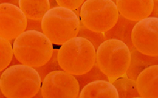
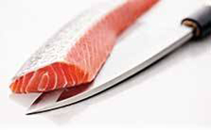
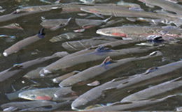
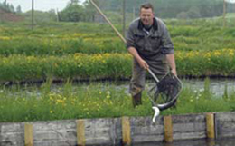

Caviar de truite fondant

Nous produisons un ikura de truite à texture fondante. Ce produit est fabriqué à partir de notre propre matière première...

Nous produisons un ikura de truite à texture fondante. Ce produit est fabriqué à partir de notre propre matière première...

Des filets de truite peuvent être produits sur commande. Le filetage aura lieu en novembre et décembre, lorsque la majorité des truites fraîches seront prêtes à la récolte...

L'eau est de très bonne qualité mais sa température varie fortement (0°C à 24°C), le pH est neutre et la teneur en oxygène est constante toute l'année...

La nutrition a un impact considérable sur la santé, la taille et la qualité du poisson d'élevage...